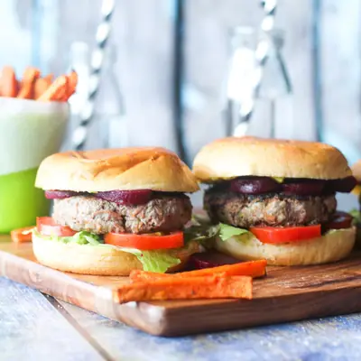

Beef Burgers (with Added Veggies)

Ingredients
- 500g (1.1lb) ground Beef (beef mince)
- 1 small onion
- 1 carrot
- 1 zucchini (courgette)
- 1 garlic clove, (minced)
- 1 tbsp Worcestershire sauce (*do not add for baby)
- 1 egg, (lightly beaten)
- 1 tbsp oil
Steps
- Finely grate onion, carrot and zucchini and squeeze as much liquid out as possible (I placed the grated vegetables in a clean cloth to squeeze)
- Place all the ingredients into a large mixing bowl and mix until just combined.
- Divide the mixture into 4 equal portions and use hands to gently form into patties slightly larger than the size of your buns. (As they will shrink slightly when you cook)
- Season with salt and pepper on both sides of each burger (skip this if making for baby / younger child). Place an indent in the centre of each burger using your thumb. (This stops the burger from doming and shrinking).
- Heat 1 tbsp of oil in a skillet or BBQ over medium-high heat. Add patties and cook for 2 to 4 mins on one side (until the bottom is nicely browned). Flip and cook for a further 2 to 3 mins until cooked through.
- To Serve: Spread base of bun with sauce of choice, top with lettuce and veggies of choice (we love tomato, beetroot and onions). Top with lid of bun and serve.
Recipe by Healthy Little Foodies, from Healthy Little Foodies. Saved here for personal use; the original has the full notes, tips and photos. Open original